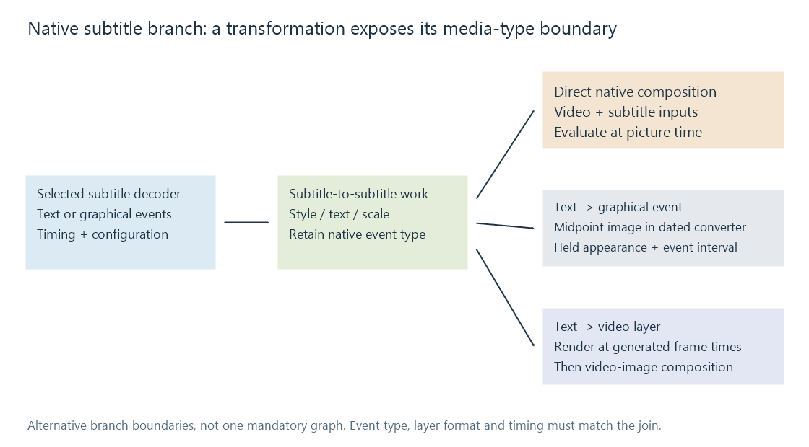

Subtitle filtering pipeline
Native subtitle filtering keeps decoded text or graphics in a separate timed branch, exposing transformations before direct composition or conversion into an image/video layer.
A subtitle filtering pipeline keeps decoded subtitle content as a branch in the processing graph. The branch can transform text, style or graphical geometry before joining the picture branch.
This exposes intermediate representations. A filter can accept subtitle frames rather than pretending that all captions have already become video pictures. “Filtering pipeline” here describes that graph architecture, not a fixed Emby menu option.

A native event carries timing and presentation
The public Emby FFmpeg 5.1-emby_2023_06_25_u1 source extends subtitle handling with a native subtitle media type. The filter pads identify subtitle inputs and outputs separately from video.
For text, the branch can carry ASS event content and track configuration. For graphics, it can carry areas with palette/image data and placement. The frame's subtitle timing identifies when the event belongs to the presentation.
A subtitle-to-subtitle transformation can preserve that event interval while changing its content. A conversion to video instead produces picture samples on a video timeline. Both routes may display the same static sentence, but their clocks and capabilities are not interchangeable.
What the examined filters do
| Filter/interface in the dated source | Transformation boundary | Consequence |
|---|---|---|
stripstyles |
ASS subtitle → ASS subtitle | Reduces selected formatting; configurable keep flags can retain some classes of overrides |
textmod family |
Text subtitle → text subtitle | Changes text content according to the selected operation |
subscale |
Graphic subtitle → graphic subtitle | Resizes graphical areas and updates presentation geometry |
text2graphicsub |
Text subtitle → graphic subtitle | Evaluates a rendered image at the event midpoint |
textsub2video |
Text subtitle → video | Renders the text at generated video-frame times |
overlaytextsubs |
Video + text subtitles → video | Renders and composes text at picture time |
overlaygraphicsubs |
Video + graphic subtitles → video | Blends supplied graphical presentation into pictures |
This table is an interface map for the examined implementation. It is not a list of features guaranteed to be compiled into every current Emby tool.
Style reduction changes an authored layout
Removing an ASS position or movement override can turn an authored sign into a default-position caption. Removing font or size instructions can change line breaks, even when all characters survive.
The examined stripstyles filter has keep flags for classes of overrides, including position/movement and other presentation commands. Its name alone therefore does not specify exactly what remains in a configured graph. The meaningful description is which classes that invocation retains.
A content transformation has a different responsibility. Modifying words can change line width, reading load and the meaning of a caption. Preserving timestamps does not guarantee that the new content fits the old layout or duration.
Graphical scaling cannot recover those semantics. It resizes an already rendered appearance. A stretched glyph remains the same drawn object; it has not been reflowed or reshaped as text.
A midpoint image freezes internal animation
Take a 12.5–15.0-second event whose anchor moves from x = 160 to x = 480 in its first second. Its midpoint is 13.75 seconds.
The examined text2graphicsub converter calls libass at that midpoint. The generated graphical subtitle therefore shows the completed position, x = 480. Holding that graphical event over its interval presents a static result, even though the original text event was animated.
By contrast, textsub2video and overlaytextsubs evaluate the presentation at picture times. At 13.0 seconds, the same authored movement places the anchor at x = 320.
The pipeline fundamentals plot shows both results. Choosing the conversion boundary determines whether the internal time behavior is represented. A static subtitle can be suitable for a midpoint image; movement, fades and karaoke require examination of the specific converter's evaluation model.
The final join accepts a particular representation
A native text branch can join overlaytextsubs directly, leaving text evaluation at the CPU compositor. A branch intended for a video-image overlay needs an appropriate conversion and frame timing first. A device compositor additionally needs compatible device images.
The graph cannot connect a native subtitle frame to an arbitrary video-input filter solely because both eventually produce visible words. Media type, image format, canvas geometry and timestamps form the interface contract.
Emby's SDK step types include categories for style stripping, text modification, scaling, text-to-video conversion and overlay. Those labels help describe intent. They do not provide a one-to-one mapping from every model value to a filter name or prove the selected implementation's preservation of animation.
See Also
- Subtitle overlay pipeline fundamentals
- Classic subtitle overlay pipeline
- Hardware subtitle overlay pipeline
- Subtitle overlay filtering
- ASS typesetting